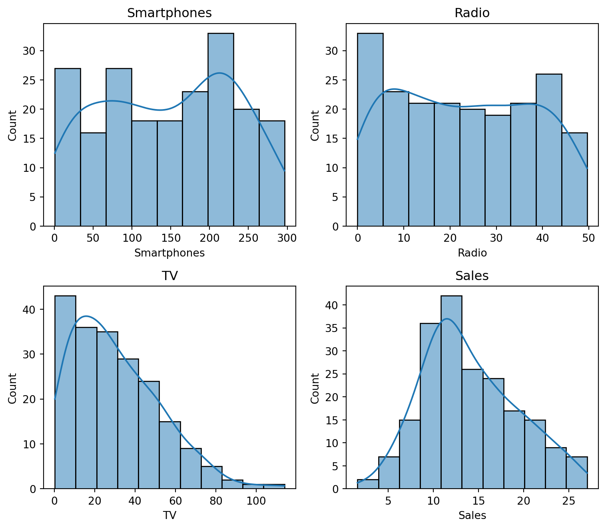
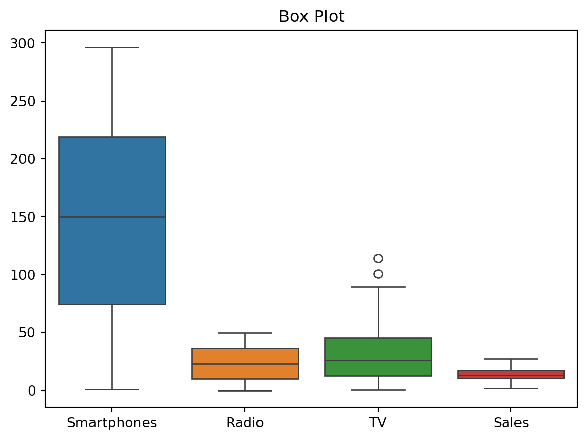
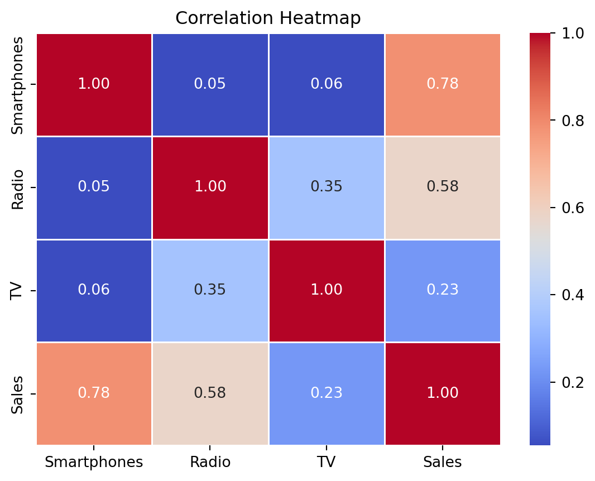
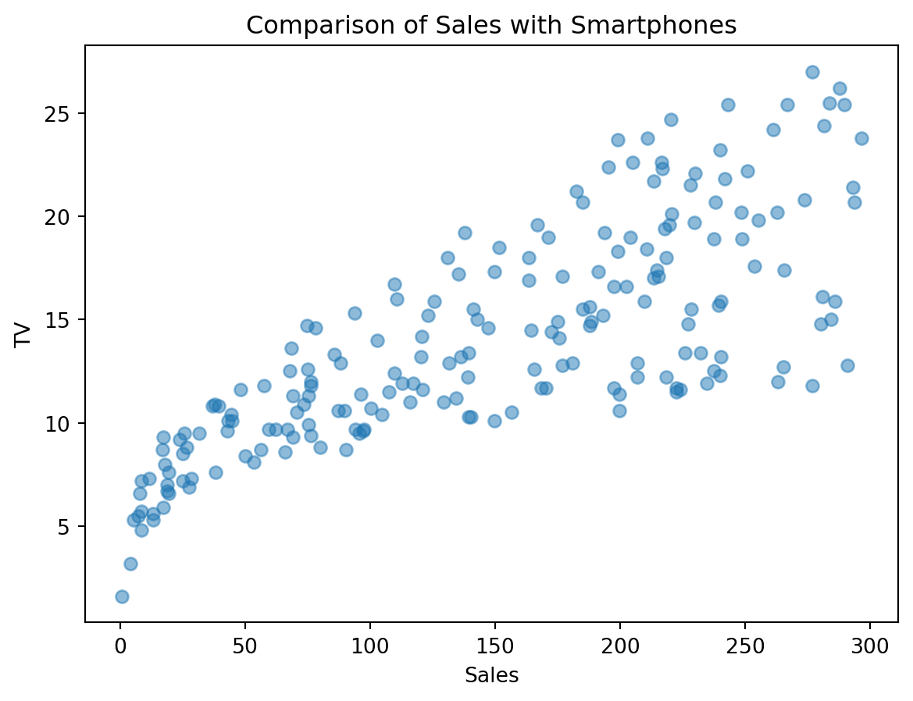
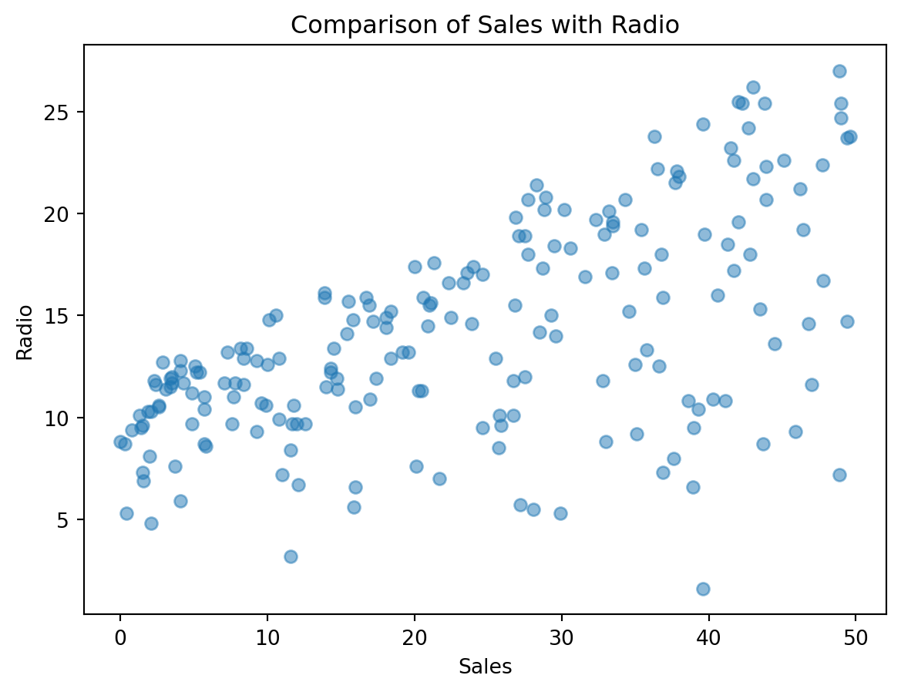
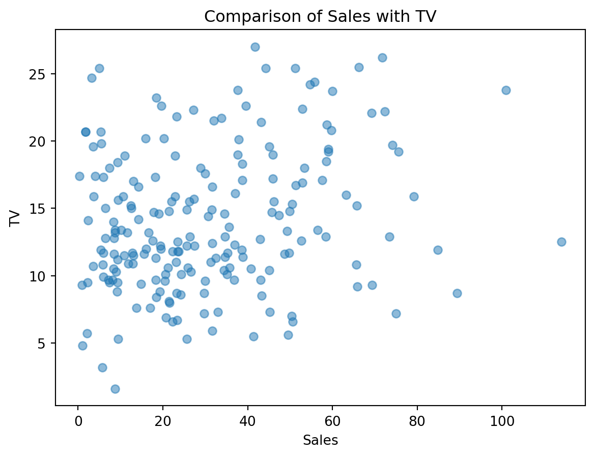
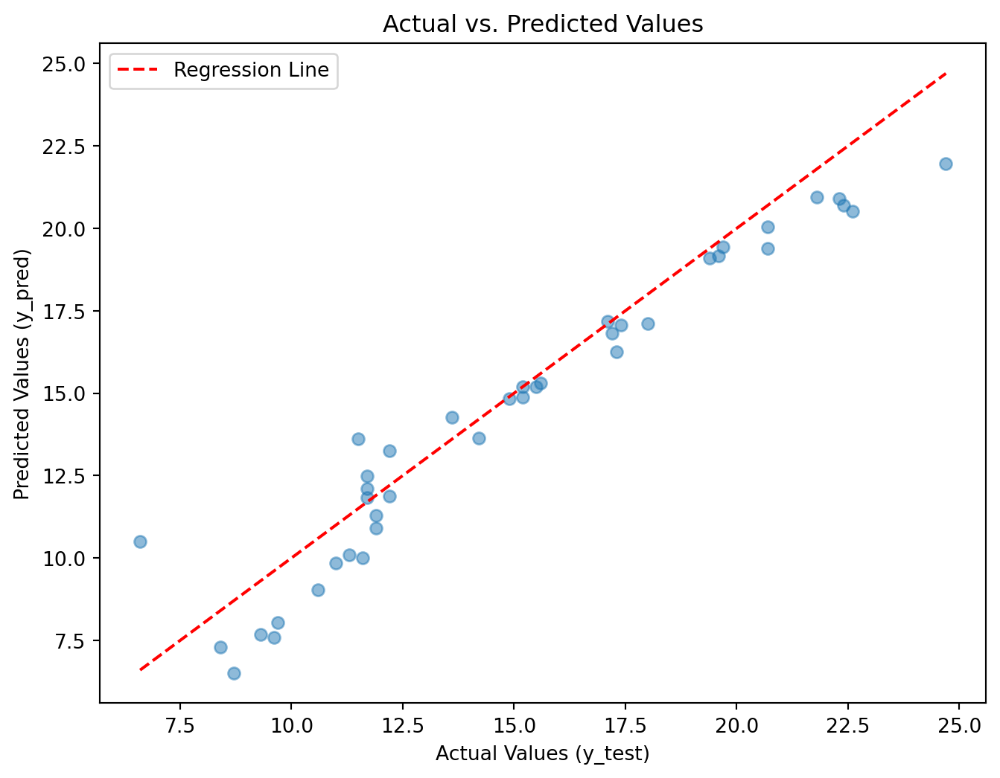

#Advertising is key for sales, but quantifying its impact can be tricky. In this post, we'll use Python to explore an advertising dataset, visualize relationships, and build a model to predict sales based on ad spending.
Analyzing Advertising Data with Linear Regression
Introduction
Exploring the Dataset
import pandas as pd
import numpy as np
import matplotlib.pyplot as plt
import seaborn as sns
from sklearn.model_selection import train_test_split
from sklearn.linear_model import LinearRegression
from sklearn.metrics import mean_squared_error, mean_absolute_error, r2_score
df=pd.read_csv("Advertising.csv")
df| Smartphones | Radio | TV | Sales | |
|---|---|---|---|---|
| 0 | 230.1 | 37.8 | 69.2 | 22.1 |
| 1 | 44.5 | 39.3 | 45.1 | 10.4 |
| 2 | 17.2 | 45.9 | 69.3 | 9.3 |
| 3 | 151.5 | 41.3 | 58.5 | 18.5 |
| 4 | 180.8 | 10.8 | 58.4 | 12.9 |
| ... | ... | ... | ... | ... |
| 195 | 38.2 | 3.7 | 13.8 | 7.6 |
| 196 | 94.2 | 4.9 | 8.1 | 9.7 |
| 197 | 177.0 | 9.3 | 6.4 | 12.8 |
| 198 | 283.6 | 42.0 | 66.2 | 25.5 |
| 199 | 232.1 | 8.6 | 8.7 | 13.4 |
200 rows × 4 columns
df.info()<class 'pandas.core.frame.DataFrame'>
RangeIndex: 200 entries, 0 to 199
Data columns (total 4 columns):
# Column Non-Null Count Dtype
--- ------ -------------- -----
0 Smartphones 200 non-null float64
1 Radio 200 non-null float64
2 TV 200 non-null float64
3 Sales 200 non-null float64
dtypes: float64(4)
memory usage: 6.4 KBdf.describe()| Smartphones | Radio | TV | Sales | |
|---|---|---|---|---|
| count | 200.000000 | 200.000000 | 200.000000 | 200.000000 |
| mean | 147.042500 | 23.264000 | 30.554000 | 14.022500 |
| std | 85.854236 | 14.846809 | 21.778621 | 5.217457 |
| min | 0.700000 | 0.000000 | 0.300000 | 1.600000 |
| 25% | 74.375000 | 9.975000 | 12.750000 | 10.375000 |
| 50% | 149.750000 | 22.900000 | 25.750000 | 12.900000 |
| 75% | 218.825000 | 36.525000 | 45.100000 | 17.400000 |
| max | 296.400000 | 49.600000 | 114.000000 | 27.000000 |
df.isnull().sum()Smartphones 0
Radio 0
TV 0
Sales 0
dtype: int64plt.figure(figsize=(8, 10))
columns_to_plot = ['Smartphones', 'Radio', 'TV', 'Sales']
for i, column in enumerate(columns_to_plot, 1):
plt.subplot(3, 2, i)
sns.histplot(data=df[column], kde=True)
plt.title(column)
plt.xlabel(column)
plt.tight_layout()
plt.show() 
sns.boxplot(data=df)
plt.title('Box Plot')
plt.show()
correlation_matrix = df.corr()
sns.heatmap(correlation_matrix, annot=True, cmap='coolwarm', fmt='.2f', linewidths=0.5)
plt.title('Correlation Heatmap')
plt.show()
plt.scatter(df["Smartphones"],df["Sales"],alpha=0.5)
plt.xlabel("Sales")
plt.ylabel("TV")
plt.title("Comparison of Sales with Smartphones")
plt.show()
plt.scatter(df["Radio"],df["Sales"],alpha=0.5)
plt.xlabel("Sales")
plt.ylabel("Radio")
plt.title("Comparison of Sales with Radio")
plt.show()
plt.scatter(df["TV"],df["Sales"],alpha=0.5)
plt.xlabel("Sales")
plt.ylabel("TV")
plt.title("Comparison of Sales with TV")
plt.show()
Linear Regression Model
#We build a linear regression model to predict sales based on the ad channels. After splitting the data into training and test sets, we fit and evaluate the model.It achieves decent performance in predicting sales numbers based on new ad input data. Checking the actuals vs predictions shows the relationship and where the model.X = df[['Smartphones', 'TV', 'Radio']]
y = df['Sales']
X.head()
y.head()0 22.1
1 10.4
2 9.3
3 18.5
4 12.9
Name: Sales, dtype: float64X_train , X_test , y_train , y_test = train_test_split(X , y , test_size=0.2 , random_state=100)
model = LinearRegression()
model.fit(X_train , y_train )
y_pred = model.predict(X_test)
mse = mean_squared_error(y_test, y_pred)
mae = mean_absolute_error(y_test, y_pred)
r2 = r2_score(y_test, y_pred)
print("Mean Squared Error:", mse)
print("Mean Absolute Error:", mae)
print("R-squared:", r2)Mean Squared Error: 1.7332927815807728
Mean Absolute Error: 1.0271679904924937
R-squared: 0.9184369032278497plt.figure(figsize=(8, 6))
plt.scatter(y_test, y_pred, alpha=0.5)
plt.xlabel("Actual Values (y_test)")
plt.ylabel("Predicted Values (y_pred)")
plt.title("Actual vs. Predicted Values")
regression_line_x = np.linspace(min(y_test), max(y_test), 100)
regression_line_y = regression_line_x
plt.plot(regression_line_x, regression_line_y, color='red', linestyle='--', label="Regression Line")
plt.legend()
plt.show()
Conclusion
#While not perfect, the model uncovers clear links between advertising dollars and sales response. This enables data-driven decisions about marketing mix and budget allocation. There are many opportunities to improve the model with techniques like regularization and interactions. But it's a solid starting point to quantify advertising's impact.